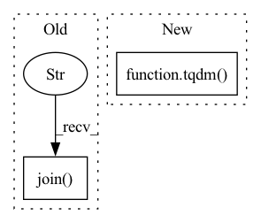

Pattern ID :19142
Before Change
newtext.append(noises[mode](word))
else:
newtext.append(word)
robustness_tests.append(" ".join( newtext) )
return robustness_tests
After Change
if omit:
noises.append(omission)
robustness_tests = []
for i in tqdm( range(len(tests))) :
newtext = []
text = normalizeText(tests[i])
for word in text:In pattern: SUPERPATTERN
Frequency: 4
Non-data size: 2
Instances Fragment ID: 62251685
Project Name: pliang279/multibench
Commit Name: f9d1eacc6b4a62c2f33bb59388c33bec450c271f
Time: 2021-06-05
Author: ztwu_nil@zju.edu.cn
File Name: robustness/text_robust.py
M Class Name: AnonimousClass
N Class Name: AnonimousClass
M Method Name: text_robustness(7)
N Method Name: text_robustness(7)
M Parent Class:
N Parent Class:
M File Name: robustness/text_robust.py
N File Name: robustness/text_robust.py
M Start Line: 20
M End Line: 29
N Start Line: 21
N End Line: 30
Before Change
else:
break
// 打印模型翻译输出的中文句子结果
print("translation: %s" % " ".join( translation) )
After Change
res = []
with torch.no_grad():
// 在data的英文数据长度上遍历下标
for batch in tqdm( data) :
// 待翻译的英文句子
en_sent = batch.src_text
// 对应的中文句子
Fragment ID: 62251684
Project Name: hemingkx/chinesenmt
Commit Name: 9adf53cb6d9b875c9d173643a8d266d49d6f90eb
Time: 2020-12-15
Author: hemingkx@gmail.com
File Name: train.py
M Class Name: AnonimousClass
N Class Name: AnonimousClass
M Method Name: evaluate(2)
N Method Name: evaluate(2)
M Parent Class:
N Parent Class:
M File Name: train.py
N File Name: train.py
M Start Line: 53
M End Line: 84
N Start Line: 67
N End Line: 95
Before Change
for line in tqdm(f, total=count_file_lines(srcfile)):
ex = json.loads(line)
code = encoder._encode(ex["func"])
dataset[ex["idx"]] = " ".join( code)
fn_lengths.append(len(code))
print("Max/Avg. function length - {} / {}".format(max(fn_lengths), 1.0 * sum(fn_lengths) / len(fn_lengths)))
with open(tgtfile, "w", encoding="utf8") as fw:After Change
pool = Pool(workers, initializer=encoder.initializer)
processed_dataset = {}
with tqdm(total=len(dataset), desc="Processing") as pbar:
for i, ex in enumerate(pool.imap(encoder.encode, dataset, 100)):
pbar.update()
processed_dataset[ex["idx"]] = ex["code"] Fragment ID: 62251687
Project Name: wasiahmad/plbart
Commit Name: 40d61db8a56a9874dcf52dfb88ed9776a978f094
Time: 2021-06-09
Author: wasiahmad@ucla.edu
File Name: scripts/code_to_code/clone_detection/encode.py
M Class Name: AnonimousClass
N Class Name: AnonimousClass
M Method Name: preprocess(4)
N Method Name: preprocess(3)
M Parent Class:
N Parent Class:
M File Name: scripts/code_to_code/clone_detection/encode.py
N File Name: scripts/code_to_code/clone_detection/encode.py
M Start Line: 37
M End Line: 47
N Start Line: 45
N End Line: 61
Before Change
newtext.append(noises[mode](word))
else:
newtext.append(word)
robustness_tests.append(" ".join( newtext) )
return robustness_tests
After Change
if omit:
noises.append(omission)
robustness_tests = []
for i in tqdm( range(len(tests))) :
newtext = []
text = normalizeText(tests[i])
for word in text: Fragment ID: 62251682
Project Name: pliang279/multibench
Commit Name: 03e9f8e64fd4ac40fa7bc4bafbc0bfa3295c70d1
Time: 2021-06-05
Author: ztwu_nil@zju.edu.cn
File Name: robustness/text_robust.py
M Class Name: AnonimousClass
N Class Name: AnonimousClass
M Method Name: text_robustness(7)
N Method Name: text_robustness(7)
M Parent Class:
N Parent Class:
M File Name: robustness/text_robust.py
N File Name: robustness/text_robust.py
M Start Line: 20
M End Line: 29
N Start Line: 21
N End Line: 30